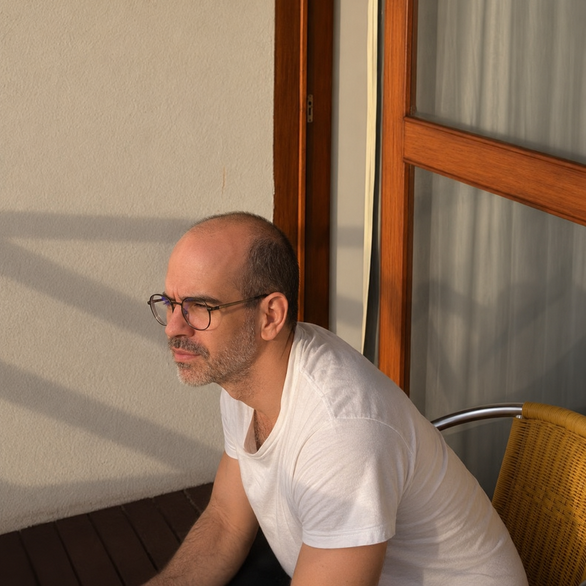

Combinatorial optimization
Mathematical structures and effective algorithms for challenging discrete decision problems.
Explore ↗Associate Professor of Computer Science
Universidade Federal Fluminense
Exploring elegant algorithms for complex real-world problems. My research spans combinatorial optimization, integer programming, and the design of efficient heuristics — bridging theory and practice.

Mathematical structures and effective algorithms for challenging discrete decision problems.
Explore ↗Formulations, exact methods, and computational approaches to optimization.
Explore ↗Practical methods that deliver strong solutions at scale for real applications.
Explore ↗I received my B.Sc. in Computer Science from UECE (1999), my M.Sc. from UFC (2002), and my D.Sc. from UFRJ (2008). I carried out postdoctoral research at Unicamp in 2010.
Today, I am an Associate Professor at the Institute of Computing, Universidade Federal Fluminense (UFF). I work on combinatorial optimization, mathematical programming, and algorithm design, with applications ranging from routing to computational workflows.
Interested in working together? Get in touch ↗Recent contributions in routing, cloud computing, and optimization.
JOURNAL OF INTERNET SERVICES AND APPLICATIONS
Concurrency and Computation: Practice and Experience
SN Computer Science
Courses, student supervision, and resources for the next generation of researchers.